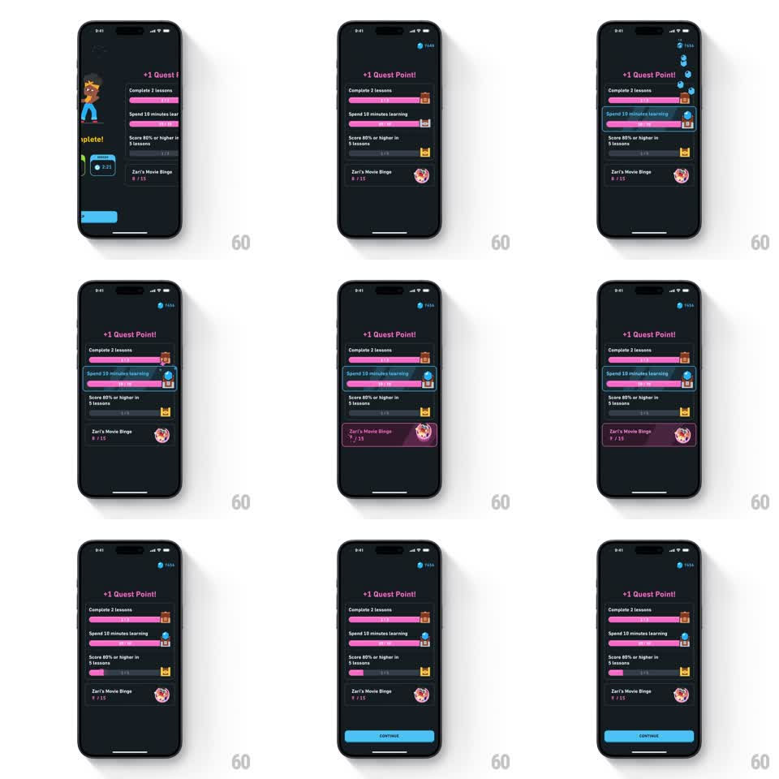

Media
Frame-by-frame

Rebuild this animation 1:1: Duolingo's quest reward collection - on the dark quests screen, completing a quest sends a gem flying along a curved trail up to the top-right counter, which ticks up as the quest's progress bar fills purple and its chest icon flips to unlocked, ending with a CONTINUE button.

Rebuild this animation 1:1: Duolingo's quest reward collection - on the dark quests screen, completing a quest sends a gem flying along a curved trail up to the top-right counter, which ticks up as the quest's progress bar fills purple and its chest icon flips to unlocked, ending with a CONTINUE button.
## Integration
Integration: stack-agnostic spec - springs given as stiffness/damping, timed motions as duration + curve; map every value to your framework and animation library of choice.
## Scene
Dark charcoal quests screen. Header "+1 Quest Point!" in pink. A stack of quest rows, each with a title ("Complete 2 lessons", "Spend 10 minutes learning", "Score 80% or higher in 5 lessons"), a progress bar with a chest icon at its end, and a friend-quest row ("Zari's Movie Binge") with avatar. Top-right: a blue gem counter. Bottom: blue CONTINUE button appears at the end.
## Motion spec
Pattern: reward collection with flying particle trail and counter increment.
- Trigger: the completed quest's row gets a blue selection outline (120ms) and its bar fills to full (400ms ease-out, purple).
- The chest icon at the bar's end pops open (scale 1.0 -> 1.3 -> 1.0, 200ms, lid color shift).
- A gem particle launches from the chest and flies to the top-right counter along a bezier arc (500ms, ease-in), trailing 2-3 fading echo gems (80ms behind each other).
- On arrival the counter pill pulses (scale 1.0 -> 1.15 -> 1.0, 150ms) and its number ticks up with a vertical digit roll (200ms).
- The header "+1 Quest Point!" fades in with the flight (200ms).
- CONTINUE slides up from the bottom (280ms ease-out) once the counter settles.
## Calibration
- The gem flight path is the connective tissue - it must visibly leave the chest and land on the counter, not teleport.
- Only the rewarded quest animates; other rows hold still.
## Reduced motion
No flight: the bar fills, the counter crossfades to its new value, and the header fades in; CONTINUE appears without travel.
## Don't miss
- The trail gems echo the main gem with decreasing opacity, giving the arc a comet tail.
- The friend-quest row stays static - it is context, not part of the reward.